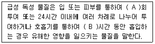
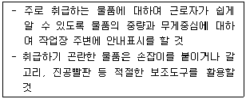
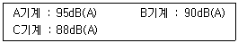
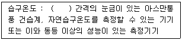
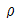
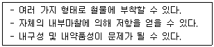
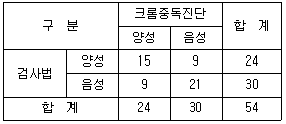

산업위생관리기사 (2016-05-08 기출문제)
1과목: 산업위생학개론
1. 직업성 질환의 예방에 관한 설명으로 틀린 것은?
- 직업성 질환의 3차 예방은 대개 치료와 재활과정으로, 근로자들이 더 이상 노출되지 않도록 해야 하며 필요시 적절한 의학적 치료를 받아야 한다.
- 직업성 질환의 1차 예방은 원인인자의 제거나 원인이 되는 손상을 막는 것으로, 새로운 유해인자의 통제, 알려진 유해인자의 통제, 노출관리를 통해 할 수 있다.
- 직업성 질환의 2차 예방은 근로자가 진료를 받기 전 단계인 초기에 질병을 발견하는 것으로, 질병의 선별검사, 감시, 주기적 의학적 감사, 법적인 의학적 검사를 통해 할 수 있다.
- 직업성 질환은 전체적인 질병 이환율에 비해서는 비교적 높지만, 직업성 질환은 원인인자가 알려져 있고 유해인자에 대한 노출을 조절할 수 없으므로 안전 농도로 유지할 수 있기 때문에 예방대책을 마련할 수 있다.
(정답률: 71%)

2. 육체적 작업능력이 16kcal/min인 근로자가 1일 8시간씩 일하고 있다. 이때 작업대사량은 8kcal/min 이고, 휴식시의 대사량은 1.2kcal/min이다. 1시간을 기준으로 할 때 이 근로자의 적정휴식시간은 약 얼마인가?
- 18.2분
- 23.4분
- 25.3분
- 30.5분
(정답률: 73%)
3. 미국산업위생학술원(American Academy of Industrial Hygiene)에서 산업위생 분야에 종사하는 사람들이 반드시 지켜야 할 윤리강령 중 전문가로서의 책임부분에 해당하지 않는 것은?
- 기업체의 기밀을 누설하지 않는다.
- 근로자의 건강보호 책임을 최우선으로 한다.
- 전문 분야로서의 산업위생을 학문적으로 발전시킨다.
- 과학적 방법의 적용과 자료의 해석에서 객관성을 유지한다.
(정답률: 70%)
4. 주로 여름과 초가을에 흔히 발생되고 강제기류 난방장치, 가습장치, 저수조 온수장치 등 공기를 순환시키는 장치들과 냉각탑 등에 기생하며 실내·외로 확산되어 호흡기 질환을 유발시키는 세균은?
- 푸른곰팡이
- 나이세리아균
- 바실러스균
- 레이오넬라균
(정답률: 81%)
5. 산업안전보건법령상 단위작업장소에서 동일 작업근로자수가 13명 일 경우 시료채취 근로자수는 얼마가 되는가?
- 1명
- 2명
- 3명
- 4명
(정답률: 78%)
6. 재해예방의 4원칙에 대한 설명으로 틀린 것은?
- 재해발생에는 반드시 그 원인이 있다.
- 재해가 발생하면 반드시 손실도 발생한다.
- 재해는 원칙적으로 원인만 제거되면 예방이 가능하다.
- 재해예방을 위한 가능한 안전대책은 반드시 존재한다.
(정답률: 76%)
7. 산업위생의 역사에서 직업과 질병의 관계가 있음을 알렸고, 광산에서의 납중독을 보고한 사람은?
- Larigo
- Paracelsus
- Percival Pott
- Hippocrates
(정답률: 78%)
8. 직업병의 발생요인 중 직접요인은 크게 환경요인과 작업요인으로 구분되는데 환경요인으로 볼 수 없는 것은?
- 진동현상
- 대기조건의 변화
- 격렬한 근육운동
- 화학물질의 취급 또는 발생
(정답률: 82%)
9. 조건이 고려된 NIOSH에서 제안한 중량물 취급작업의 권고치 중 감시기준(AL)을 구하기 위한 식에 포함된 요소가 아닌 것은?
- 대상 물체의 수평거리
- 대상 물체의 이동거리
- 대상 물체의 이동속도
- 중량물 취급작업의 빈도
(정답률: 66%)
10. 우리나라의 화학물질의 노출기준에 관한 설명으로 틀린 것은?
- Skin 이라고 표시된 물질은 피부 자극성을 뜻한다.
- 발암성 정보물질의 표기 중 1A는 사람에게 충분한 발암성 증거가 있는 물질을 의미한다.
- Skin 표시 물질은 점막과 눈 그리고 경피로 흡수되어 전신 영향을 일으킬 수 있는 물질을 말한다.
- 화학물질이 IARC 등의 발암성 등급과 NTP의 R 등급을 모두 갖는 결우에는 NTP 의 R 등급은 고려하지 아니한다.
(정답률: 56%)
11. 사무실 공기관리 지침에 정한 사무실 공기의 오염물질에 대한 시료채취시간이 바르게 연결된 것은?
- 미세먼지 : 업무시간 동안 4시간 이상 연속측정
- 포름알데히드 : 업무시간 동안 2시간 단위로 10분간 3회 측정
- 이산화탄소 : 업무시작 후 1 시간 전후 및 종료 전 1시간 전후 각각 30분간 측정
- 일산화탄소 : 업무시작 후 1시간 이내 및 종료 전 1시간 이내 각각 10분간 측정
(정답률: 47%)
12. 근골격계질환 평가 방법 중 JSI(Job Strain Index)에 대한 설명으로 틀린 것은?
- 주로 상지작업 특히 허리와 팔을 중심으로 이루어지는 작업에 유용하게 사용할 수 있다.
- JSI 평가결과의 점수가 7점 이상은 위험한 작업이므로 즉시 작업개선이 필요한 작업으로 관리기준을 제시하게 된다.
- 이 평가방법은 손목의 특이적인 위험성만을 평가하고 있어 제한적인 작업에 대해서만 평가가 가능하고, 손, 손목부위에서 중요한 진동에 대한 위험요인이 배제되었다는 단점이 있다.
- 평가과정은 지속적인 힘에 대해 5등급으로 나누어 평가하고, 힘을 필요로 하는 작업의 비율, 손목의 부적절한 작업자세, 반복성, 작업속도, 작업시간 등 총 6가지 요소를 평가한 후 각각의 점수를 곱하여 최종 점수를 산출하게 된다.
(정답률: 51%)
13. 근로자의 작업에 대한 적성검사 방법 중 심리학적 적성검사에 해당하지 않는 것은?
- 지능검사
- 감각기능검사
- 인성검사
- 지각동작검사
(정답률: 67%)
14. 산업위생의 목적과 거리가 먼 것은?
- 작업환경의 개선
- 작업자의 건강보호
- 직업병 치료와 보상
- 작업조건의 인간공학적 개선
(정답률: 88%)
15. 산업피로를 가장 적게 하고 생산량을 최고로 올릴 수 있는 경제적인 작업속도를 무엇이라 하는가?
- 지적속도
- 산소섭취속도
- 산소소비속도
- 작업효율속도
(정답률: 78%)
16. 연간총근로시간수가 100000시간인 사업장에서 1년 동안 재해가 50건 발생하였으며, 손실된 근로일수가 100일 이었다. 이 사업장의 강도율은 얼마인가?
- 1
- 2
- 20
- 40
(정답률: 74%)
17. 산업피로에 대한 대책으로 거리가 먼 것은?
- 정신신경 작업에 있어서는 몸을 가볍게 움직이는 휴식을 취하는 것이 좋다.
- 단위시간당 적정 작업량을 도모하기 위하여 일 또는 월간 작업량을 적정화하여야 한다.
- 전신의 근육을 쓰는 작업에서는 휴식시에 체조 등으로 몸을 움직이는 편이 피로회복에 도움이 된다.
- 작업 자세(물체와 눈과의 거리, 작업에 사용되는 신체 부위의 위치, 높이 등)를 적정하게 유지하는 것이 좋다.
(정답률: 73%)
18. 국소피로의 평가를 위하여 근전도(EMG)를 측정하였다. 피로한 근육이 정상 근육에 비하여 나타내는 근전도 상의 차이를 설명한 것으로 틀린 것은?
- 총전압이 감소한다.
- 평균주파수가 감소한다.
- 저주파수(0 ~ 40 Hz)에서 힘이 증가한다.
- 고주파수(40 ~ 200 Hz)에서 힘이 감소한다.
(정답률: 81%)
19. 산업안전보건법령상 유해인자의 분류기준에 있어 다음 설명 중 ( )안에 해당하는 내용을 바르게 나열한 것은?

- A : 1, B : 4
- A : 1, B : 6
- A : 2, B : 4
- A : 2, B : 6
(정답률: 53%)
20. 산업안전보건법령상 사업주는 몇 kg 이상의 중량을 들어 올리는 작업에 근로자를 종사하도록 할 때 다음과 같은 조치를 취하여야 하는가?

- 3kg
- 5kg
- 10kg
- 15kg
(정답률: 66%)
2과목: 작업위생측정 및 평가
21. 소음측정 시 단위작업장소에서 소음발생시간이 6시간 이내인 경우나 소음발생원에서의 발생시간이 간헐적인 경우의 측정시간 및 횟수 기준으로 옳은 것은? (단, 고용노동부 고시 기준)
- 발생시간 동안 연속 측정하거나 등 간격으로 나누어 2회 이상 측정하여야 한다.
- 발생시간 동안 연속 측정하거나 등 간격으로 나누어 4회 이상 측정하여야 한다.
- 발생시간 동안 연속 측정하거나 등 간격으로 나누어 6회 이상 측정하여야 한다.
- 발생시간 동안 연속 측정하거나 등 간격으로 나누어 8회 이상 측정하여야 한다.
(정답률: 79%)
22. 누적소음노출량 측정기로 소음을 측정하는 경우에 기기설정으로 적절한 것은? (단, 고용노동부 고시 기준)
- Criteria : 80 dB, Exchange Rate : 10 dB, Threshold : 90 dB
- Criteria : 90 dB, Exchange Rate : 10 dB, Threshold : 80 dB
- Criteria : 80 dB, Exchange Rate : 5 dB, Threshold : 90 dB
- Criteria : 90 dB, Exchange Rate : 5 dB, Threshold : 80 dB
(정답률: 84%)
23. 어느 작업장의 소음 측정 결과가 다음과 같았다. 이 때의 총음압레벨(음압레벨 합산)은? (단, 기계 음압레벨 측정 기준)

- 약 92.3dB(A)
- 약 94.6dB(A)
- 약 96.8dB(A)
- 약 98.2dB(A)
(정답률: 74%)
24. 공기 중 석면을 막여과지에 채취한 후 전처리하여 분석하는 방법으로 다른 방법에 비하여 간편하거나 석면의 감별에 어려움이 있는 측정방법은?
- X선 회절법
- 편광현미경법
- 위상차현미경법
- 전자현미경법
(정답률: 58%)
25. 화학시험의 일반사항 중 시약 및 표준물질에 관한 설명으로 틀린 것은? (단, 고용노동부 고시 기준)
- 분석에 사용하는 시약은 따로 규정이 없는 한 특급 또는 1급 이상이거나 이와 동등한 규격의 것을 사용하여야 한다.
- 분석에 사용되는 표준품은 원칙적으로 1급이상 이거나 이와 동등한 규격의 것을 사용하여야 한다.
- 시료의 시험, 바탕시험 및표준액에 대한 시험을 일련의 동일시험으로 행할 때에 사용하는 시약 또는 시액은 동일 로트로 조제된 것을 사용한다.
- 분석에 사용하는 시약 중 단순히 염산으로 표시하였을 때는 농도 35.0~37.0%(비중(약)은 1.18)이상의 것을 말한다.
(정답률: 55%)
26. 산업위생통계에서 유해물질 농도를 표준화 하려면 무엇을 알아야 하는가?
- 측정치와 노출기준
- 평균치와 표준편차
- 측정치와 시료수
- 기하 평균치와 기하 표준편차
(정답률: 65%)
27. ACGIH에서는 입자상물질을 크게 흡입성, 흉곽성, 호흡성으로 제시하고 있다. 다음 설명 중 옳은 것은?
- 흡입성 먼지는 기관지계나 폐포 어느 곳에 침착하더라도 유해한 입자상 물질로 보통 입자크기는 1~10μm 이내의 범위이다.
- 흉곽성 먼지는 가스교환부위인 폐기도에 침착하여 독성을 나타내며 평균 입자크기는 50μm이다.
- 흉곽성 먼지는 호흡기계 어느 부위에 침착하더라도 유해한 입자상 물질이며 평균입자크기는 25μm이다.
- 호흡성 먼지는 폐포에 침착하여 독성을 나타내며 평균입자 크기는 4μm이다.
(정답률: 82%)
28. 작업환경 공기 중에 벤젠(TVL =10ppm) 4ppm, 톨루엔(TLV=100ppm) 40ppm, 크실렌(TLV=150ppm) 50ppm이 공존하고 있는 경우에 이 작업환경 전체로서 노출기준의 초과여부 및 혼합 유기용제의 농도는?
- 노출기준을 초과, 약 85ppm
- 노출기준을 초과, 약 98ppm
- 노출기준을 초과하지 않음, 약 78ppm
- 노출기준을 초과하지 않음, 약 93ppm
(정답률: 66%)
29. 고체 흡착제를 이용하여 시료채취를 할 때 영향을 주는 인자에 관한 설명으로 틀린 것은?
- 오염물질 농도 : 공기 중 오염물질의 농도가 높을수록 파과 용량은 증가한다.
- 습도 : 습도가 높으면 극성 흡착제를 사용할 때 파과공기량이 적어진다.
- 온도 : 모든 흡착은 발열반응이므로 온도가 낮을수록 흡착에 좋은 조건인 것은 열역학적으로 분명하다.
- 시료채취유량 : 시료채취유량이 높으면 쉽게 파과가 일어나나 코팅된 흡착제인 경우는 그 경향이 약하다.
(정답률: 52%)
30. 측정방법의 정밀도를 평가하는 변이계수(coefficient of variation, CV)를 알맞게 나타낸 것은?
- 표준편차/산술평균
- 기하평균/표준편차
- 표준오차/표준편차
- 표준편차/표준오차
(정답률: 78%)
31. 다음은 고열 측정구분에 의한 측정기기와 측정시간에 관한 내용이다. ( )안에 옳은 내용은? (단, 고용노동부 고시 기준)

- 0.1도
- 0.2도
- 0.5도
- 1.0도
(정답률: 65%)
32. 작업장에서 입자상 물질을 대개 여과원리에 따라 시료를 채취한다. 여과지의 공극보다 작은 입자가 여과지에 채취도는 기전은 여과이론으로 설명할 수 있는데 다음 중 여과이론에 관여하는 기전과 가장 거리가 먼 것은?
- 차단
- 확산
- 흡착
- 관성충동
(정답률: 54%)
33. 농약공장의 작업환경 내에는 TLV가 0.1mg/m3인 파리티온과 TLV가 0.5mg/m3인 EPN이 2:3의 비율로 혼합된 분진이 부유하고 있다. 이러한 혼합분진의 TLV(mg/m3))는?
- 0.15
- 0.17
- 0.19
- 0.21
(정답률: 42%)
34. 흉곽성 먼지(TPM)의 50%가 침착되는 평균입자의 크기는? (단, ACGIH 기준)
- 0.5μm
- 2μm
- 4μm
- 10μm
(정답률: 80%)
35. 종단속도가 0.632m/hr인 입자가 있다. 이 입자의 직경이 3μm라면 비중은?
- 0.65
- 0.55
- 0.86
- 0.77
(정답률: 43%)
36. 작업장 기본특성 파악을 위한 예비조사 내용 중 유사노출그룹(HEG) 설정에 관한 설명으로 알맞지 않은 것은?
- 조직, 공정, 작업범주 그리고 공정과 작업내용별로 구분하여 설정한다.
- 역학조사를 수행할 때 사건이 발생된 근로자와 다른 노출그룹의 노출농도를 근거로 사건 발생된 노출농도를 추정할 수 있다.
- 모든 근로자의 노출농도를 평가하고자 하는데 목적이 있다.
- 모든 근로자를 유사한 노출그룹별로 구분하고 그룹별로 대표적인 근로자를 선택하여 측정하면 측정하지 않은 근로자의 노출농도까지도 추정할 수 있다.
(정답률: 53%)
37. 공기유량과 용량을 보정하는 데 사용되는 표준기구 중 1차 표준기구가 아닌 것은?
- 폐활량계
- 로타미터
- 비누거품미터
- 가스미터
(정답률: 76%)
38. 시료 채취용 막여과지에 관한 설명으로 틀린 것은?
- MCE 막여과지 : 표면에 주로 침착되어 중량분석에 적당함
- PVC 막여과지 : 흡습성이 적음
- PTFE 막여과지 : 열, 화학물질, 압력에 강한특성이 있음
- 은막 여과지 : 열적, 화학적 안정성이 있음
(정답률: 61%)
39. 허용농도가 50ppm인 트리클로로에틸렌을 취급하는 작업장에 하루 10시간 근무한다면 그 조건에서의 허용 농도치는? (단, Brief-Scala보정방법 기준)
- 47ppm
- 42ppm
- 39ppm
- 35ppm
(정답률: 67%)
40. 습구온도를 측정하기 위한 측정기기와 측정시간의 기준을 알맞게 나타낸 것은? (단, 고용노동부 고시 기준)
- 자연습구온도계 : 15분 이상
- 자연습구온도계 : 25분 이상
- 아스만통풍건습계 : 15분 이상
- 아스만통풍건습계 : 25분 이상
(정답률: 62%)
3과목: 작업환경관리대책
41. 25℃에서 공기의 점성계수 μ=1.607×10-4poise, 밀도

= 1.203kg/m3 이다. 이 때 동점성 계수(m2/sec)는?- 1.336×10-5
- 1.736×10-5
- 1.336×10-6
- 1.736×10-6
(정답률: 50%)
42. 작업환경 관리의 목적으로 가장 관련이 먼 것은?
- 산업재해 예방
- 작업환경의 개선
- 작업능률의 향상
- 직업병 치료
(정답률: 86%)
43. 분진이나 섬유유리 등으로부터 피부를 직접보호하기 위해 사용하는 산업용 피부보호제는?
- 수용성 물질차단 피부보호제
- 피막형성형 피부보호제
- 지용성 물질차단 피부보호제
- 광과민성 물질차단 피부보호제
(정답률: 75%)
44. 지적온도(optimum temperature)에 미치는 영향인자들의 설명으로 가장 거리가 먼 것은?
- 작업량이 클수록 체열 생산량이 많아 지적온도는 낮아진다.
- 여름철이 겨울철보다 지적온도가 높다.
- 더운 음식물, 알콜, 기름진 음식 등을 섭취하면 지적온도는 낮아진다.
- 노인들보다 젊은 사람의 지적온도가 높다.
(정답률: 58%)
45. 보호구에 대한 설명으로 틀린 것은?
- 신체 보호구에는 내열 방화복, 정전복, 위생보호복, 앞치마 등이 있다.
- 방열의에는 석면제난 섬유에 알루미늄 등을 증착한 알루미나이즈 방열의가 사용된다.
- 위생복(보호의)에서 방한복, 방한화, 방한모는 -18℃이하인 급냉동 창고 하역작업 등에 이용된다.
- 안면 보호구에는 일반 보호면, 용접면, 안전모, 방진 마스크 등이 있다.
(정답률: 67%)
46. 덕트직경이 30cm이고 공기유속이 10m/sec일 때 레이놀드 수는? (단, 공기의 점성계수는 1.85×10-5kg/sec·m, 공기밀도 1.2kg/m3)
- 195000
- 215000
- 235000
- 255000
(정답률: 77%)
47. 환기시설 내 기류가 기본적 유체역학적 원리에 의하여 지배되기 위한 전제 조건에 관한 내용으로 틀린 것은?
- 환기시설 내외의 열교환은 무시한다.
- 공기의 압축이나 팽창을 무시한다.
- 공기는 포화 수증기 상태로 가정한다.
- 대부분의 환기시설에서는 공기 중에 포함된 유해물질의 무게와 용량을 무시한다.
(정답률: 75%)
48. 청력보호구의 차음효과를 높이기 위한 유의사항 중 틀린 것은?
- 청력보호구는 머리의 모양이나 귓구멍에 잘맞는 것을 사용한다.
- 청력보호구는 잘 고정시켜서 보호구 자체의 진동을 최소한도로 줄여야 한다.
- 청력보호구는 기공(氣孔)이 많은 재료를 사용하여 제조한다.
- 귀덮개 형식의 보호구는 머리카락이 길 때와 안경테가 굵어서 잘 밀착되지 않을 때는 사용이 어렵다.
(정답률: 80%)
49. 회전차 외경이 600mm인 원심 송풍기의 풍량은 200m3/min이다. 회전차 외경이 1000mm인 동류(상사구조)의 송풍기가 동일한 회전수로 운전된다면 이 송풍의 풍량(m3/min)은? (단, 두 경우 모두 표준공기를 취급한다.)
- 약 333
- 약 556
- 약 926
- 약 2572
(정답률: 42%)
50. 송풍기 배출구의 총합정압은 20mmH2O이고, 흡인구의 총압전압은 -90mmH2O이며 송풍기 전후의 속도압은 20mmH2O이다. 이 송풍기의 실효정압(mmH2O)은?
- -130
- -110
- +130
- +110
(정답률: 38%)
51. 방진재료로 사용하는 방진고무의 장·단점으로 틀린 것은?
- 공기 중의 오존에 의해 산화된다.
- 내부마찰에 의한 발열 때문에 열화되고 내유 및 내열성이 약하다.
- 동적배율이 낮아 스프링 정수의 선택범위가 좁다.
- 고무자체의 내부마찰에 의해 저항을 얻을 수 있고 고주파 진동의 차진에 양호하다.
(정답률: 65%)
52. 덕트 내 공기의 압력을 측정하는 데 사용하는 장비는?
- 피토관
- 타코메타
- 열선 유속계
- 회전날개형 유속계
(정답률: 72%)
53. 여과 집진 장치의 장·단점으로 가장 거리가 먼 것은?
- 다양한 용량을 처리할 수 있다.
- 탈진방법과 여과재의 사용에 따른 설계상의 융통성이 있다.
- 섬유 여포상에서 응축이 일어날 때 습한 가스를 취급할 수 없다.
- 집진효율이 처리가스의 양과 밀도 변화에 영향이 크다.
(정답률: 34%)
54. 보호장구의 재질과 적용화학물질에 관한 내용으로 틀린 것은?
- Butyl 고무는 극성용제에 효과적으로 적용할 수 있다.
- 가죽은 기본적인 찰과상 예방이 되며 용제에는 사용하지 못한다.
- 천연고무(latex)는 절단 및 찰과상 예방에 좋으며 수용성 용액, 극성 용제에 효과적으로 적용할 수 있다.
- Vitron은 구조적으로 강하며 극성용제에 효과적으로 사용할 수 있다.
(정답률: 67%)
55. 길이, 폭, 높이가 각각 30m, 10m, 4m 인 실내공간을 1시간당 12회의 환기를 하고자 한다. 이 실내의 환기를 위한 유량(m3/min)은?
- 240
- 290
- 320
- 360
(정답률: 62%)
56. 작업장에서 Methyl Ethyl Ketone을 시간당 1.5리터 사용할 경우 작업장의 필요한 환기량 (m3/min)은? (단, MEK의 비중은 0.8⑤, TLV는 200ppm, 분자량은 72.1이고, 안전계수 K는 7로 하며 1기압 21℃기준임)
- 약 235
- 약 465
- 약 565
- 약 695
(정답률: 53%)
57. 외부식 후드의 필요송풍량을 절약하는 방법에 대한 설명으로 틀린 것은?
- 가능한 발생원의 형태와 크기에 맞는 후드를 선택하고 그 후드의 개구면을 발생원에 접근시켜 설치한다.
- 발생원의 특성에 맞는 후드의 형식을 선정한다.
- 후드의 크기는 유해물질이 밖으로 빠져 나가지 않도록 가능한 크게 하는 편이 좋다.
- 가능하면 발생원의 일부만이라도 후두 개구안에 들어가도록 설치한다.
(정답률: 63%)
58. 연기발생기 이용에 관한 설명으로 가장 거리가 먼 것은?
- 오염물질의 확산이동 관찰
- 공기의 누출입에 의한 음과 축수상자의 이상음 점검
- 후드로부터 오염물질의 이탈 요인 규명
- 후드 성능에 미치는 난기류의 영향에 대한 평가
(정답률: 55%)
59. 작업환경관리 원칙 중 대치에 관한 설명으로 옳지 않은 것은?
- 야광시계 자판에 Radium을 인으로 대치한다.
- 건조 전에 실시하던 점토배합을 건조 후 실시한다.
- 금속세척 작업시 TCE를 대신하여 계면활성제를 사용한다.
- 분체 입자를 큰 입자로 대치한다.
(정답률: 72%)
60. 주관에 45°로 분지관이 연결되어 있다. 주관 입구와 분지관의 속도압은 20mmH2O로 같고 압력손실계수는 각각 0.2 및 0.28이다. 주관과 분지관이 합류에 의한 압력손실(mmH2O)은?
- 약 6
- 약 8
- 약 10
- 약 12
(정답률: 55%)
4과목: 물리적유해인자관리
61. 전리방사선이 인체에 미치는 영향에 관여하는 인자와 가장 거리가 먼 것은?
- 전리작용
- 회절과 산란
- 피폭선량
- 조직의 감수성
(정답률: 61%)
62. 저온에 의한 1차적 생리적 영향에 해당하는 것은?
- 말초혈관의 수축
- 혈압의 일시적 상승
- 근육긴장의 증가와 전율
- 조직대사의 증진과 식욕항진
(정답률: 54%)
63. 음(sound)의 용어를 설명한 것으로 틀린 것은?
- 음선 – 음의 진행방향을 나타내는 선으로 파면에 수직한다.
- 파면 – 다수의 음원이 동시에 작용할 때 접촉하는 에너지가 동일한 점들을 연결한 선이다.
- 음파 – 공기 등의 매질을 통하여 전파하는 소밀파이며, 순음의 경우 정현파적으로 변화한다.
- 파동 – 음에너지의 전달은 매질의 운동에너지와 위치에너지의 교번작용으로 이루어진다.
(정답률: 59%)
64. 전리방사선을 인체 투과력이 큰 것에서부터 작은 순서대로 나열한 것은?
- γ선 ＞ β선 ＞ α선
- β선 ＞ γ선 ＞ α선
- β선 ＞ α선 ＞ γ선
- α선 ＞ β선 ＞ γ선
(정답률: 79%)
65. 해면 기준에서 정상적인 대기 중의 산소분압은 약 얼마인가?
- 80mmHg
- 160mmHg
- 300mmHg
- 760mmHg
(정답률: 70%)
66. 일반소음의 차음효과는 벽체의 단위표면적에 대하여 벽체의 무게를 2배로 할 때와 주파수가 2배로 될 때 차음은 몇 dB 증가 하는가?
- 2dB
- 6dB
- 10dB
- 15dB
(정답률: 80%)
67. 장시간 온열환경에 노출 후 대량의 염분상실을 동반한 땀의 과다로 인하여 발생하는 증상은?
- 열경련
- 열피로
- 열사병
- 열성발진
(정답률: 77%)
68. 인체에 적당한 기류(온열요소)속도 범위로 맞는 것은?
- 2 ~ 3 m/min
- 6 ~ 7 m/min
- 12 ~ 13 m/min
- 16 ~ 17 m/min
(정답률: 59%)
69. 높은(고)기압에 의한 건강영향의 설명으로 틀린 것은?
- 청력의 저하, 귀의 압박감이 일어나며 심하면 고막파열이 일어날 수 있다.
- 부비강 개구부 감염 혹은 기형으로 폐쇄된 경우 심한구토, 두통 등의 증상을 일으킨다.
- 압력상승이 급속한 경우 폐 및 혈액으로 탄상가스의 일과성 배출이 일어나 호흡이 억제된다.
- 3 ~ 4기압의 산소 혹은 이에 상당하는 공기중 산소분압에 의하여 중추신경계의 장해에 기인하는 운동장해를 나타내는 데 이것을 산소중독이라고 한다.
(정답률: 65%)
70. 다음 설명에 해당하는 방진재료는?

- 펠트
- 코일용수철
- 방진고무
- 공기용수철
(정답률: 78%)
71. 70dB(A)의 소음을 발생하는 두 개의 기계가 동시에 소음을 발생시킨다면 얼마 정도가 되겟는가?
- 73dB(A)
- 76dB(A)
- 80dB(A)
- 140dB(A)
(정답률: 72%)
72. 소음성 난청 중 청력장해(C5-dip)가 가장 심해지는 소음의 주파수는?
- 2000Hz
- 4000Hz
- 6000Hz
- 8000Hz
(정답률: 83%)
73. 레이저(Lasers)에 관한 설명으로 틀린 것은?
- 레이저광에 가장 민감한 표적기관은 눈이다.
- 레이저광은 출력이 대단히 강력하고 극히 좁은 파장범위를 갖기 때문에 쉽게 사란하지 않는다.
- 파장, 조사량 또는 시간 및 개인의 감수성에 따라 피부에 홍반, 수포형성, 색소침착 등이 생긴다.
- 레이저광 중 에너지의 양을 지속적으로 축적하여 강력한 파동을 발생시키는 것을 지속파라 한다.
(정답률: 59%)
74. 빛과 밝기의 단위에 관한 내용으로 맞는 것은?
- Lumen : 1 촉광의 광원으로부터 1m 거리에 1m2 면적에 투사되는 빛의 양
- 촉광 : 지름이 10cm 되는 촛불이 수평방향으로 비칠 때의 빛의 광도
- Lux : 1루멘의 빛이 1m2의 구면상에 수직으로 비추어질 때의 그 평면의 빛 밝기
- Foot-candle : 1촉광의 빛이 1in2의 평면상에 수평 방향으로 비칠 때의 그 평면의 빛의 밝기
(정답률: 54%)
75. 레이노(Raynaud)증후군의 발생 가능성이 가장 큰 작업은?
- 인쇄작업
- 용접작업
- 보일러 수리 및 가동
- 공기 해머(hammer)작업
(정답률: 80%)
76. 마이크로파의 생체작용과 가장 거리가 먼 것은?
- 체표면은 조기에 온감을 느낀다.
- 두통, 피로감, 기억력 감퇴 등을 나타낸다.
- 500~1000Hz의 마이크로파는 백내장을 일으킨다.
- 중추신경에 대해서는 300~1200Hz의 주파수 범위에서 가장 민감하다.
(정답률: 59%)
77. 감압과정에서 발생하는 감압병에 관한 설명으로 틀린 것은?
- 증상에 따른 진단은 매우 용이하다.
- 감압병의 치료는 재가압산소요법이 최상이다.
- 중추신경게 감압병은 고공비행사는 뇌에, 잠수사는 척수에 더 잘 발생한다.
- 감압병 환자는 수중재가압으로 시행하여 현장에서 즉시 치료하는 것이 바람직하다.
(정답률: 58%)
78. 중심주파수가 8000Hz인 경우, 하한주파수와 상한주파수로 가장 적절한 것은? (단, 1/1 옥타브 밴드 기준이다.)
- 5150Hz, 10300Hz
- 5220Hz, 1⑤00Hz
- 5420Hz, 11000Hz
- 5650Hz, 11300Hz
(정답률: 49%)
79. 일반적으로 인공조명 시 고려하여야 할 사항으로 가장 적절하지 않은 것은?
- 광색은 백색에 가깝게 한다.
- 가급적 간접 조명이 되도록 한다.
- 조도는 작업상 충분히 유지시킨다.
- 조명도는 균등히 유지할 수 있어야 한다.
(정답률: 74%)
80. 고압 및 고압산소요법의 질병 치료기전과 가장 거리가 먼 것은?
- 간장 및 신장 등 내분비계 감수성 증가효과
- 체내에 형성된 기포의 크기를 감소시키는 압력효과
- 혈장내 용존산소량을 증가시키는 산소분압 상승효과
- 모세혈관 신생촉진 및 백혈구의 살균능력 항진 등 창상 치료효과
(정답률: 40%)
5과목: 산업독성학
81. 페노바비탈은 디란틴을 비활성화시키는 효소를 유도함으로써 급·만성의 독성이 감소될 수 있다. 이러한 상호작용을 무엇이라고 하는가?
- 상가작용
- 부가작용
- 단독작용
- 길항작용
(정답률: 77%)
82. 생물학적 모니터링(Biological monitoring)에 관한 설명으로 틀린 것은?
- 근로자 채용 후 검사 시기를 조정하기 위하여 실시한다.
- 건강에 영향을 미치는 바람직하지 않은 노출상태를 파악하는 것이다.
- 최근 노출량이나 과거로부터 축적된 노출량을 간접적으로 파악한다.
- 건강상의 위험은 생물학적 검체에서 물질별 결정인자를 생물학적 노출지수와 비교하여 평가된다.
(정답률: 64%)
83. 진폐증을 일으키는 물질이 아닌 것은?
- 철
- 흑연
- 베릴륨
- 셀레늄
(정답률: 52%)
84. 표와 같은 크롬중독을 스크린하는 검사법을 개발하였던 이 검사법의 특이도는 얼마인가?

- 68%
- 69%
- 70%
- 71%
(정답률: 72%)
85. 유해물질이 인체에 미치는 유해성(건강영향)을 좌우하는 인자로 그 영향이 적은 것은?
- 호흡량
- 개인의 감수성
- 유해물질의 밀도
- 유해물질의 노출시간
(정답률: 52%)
86. 유해화학물질이 체내에서 해독되는 중요한 작용을 하는 것은?
- 효소
- 임파구
- 체표온도
- 적혈구
(정답률: 80%)
87. 자극성 접촉피부염에 관한 설명으로 틀린 것은?
- 작업장에서 발생빈도가 가장 높은 피부질환이다.
- 증상은 다양하지만 홍반과 부종을 동반하는 것이 특징이다.
- 원인물질은 크게 수분, 합성 화학물질, 생물성 화학물질로 구분할 수 있다.
- 면역학적 반응에 따라 과거 노출경험이 있을 때 심하게 반응이 나타난다.
(정답률: 64%)
88. 화학적 질식제(chemical asphyxiant)에 심하게 노출되었을 경우 사망에 이르게 되는 이유로 적절한 것은?
- 폐에서 산소를 제거하기 떄문
- 심장의 기능을 저하시키기 때문
- 폐속으로 들어가는 산소의 활용을 방해하기 때문
- 신진대사 기능을 높여 가용한 산소가 부족 해지기 때문
(정답률: 83%)
89. 금속열에 관한 설명으로 틀린 것은?
- 고농도의 금속산화물을 흡입함으로써 발병된다.
- 용접, 전기도금, 제련과정에서 발생하는 경우가 많다.
- 폐렴과 폐결핵의 원인이 되며 증상은 유행성 감기와 비슷하다.
- 주로 아연과 마그네슘의 증기가 원인이 되지만 다른 금속에 의하여 생기기도 한다.
(정답률: 65%)
90. 동물실험에서 구해진 역치량을 사람에게 외삽하여 “사람에게 안전한 양”으로 추정한 것을 SHD(Safe Human Dose)라고 하는데 SHD계산에 활용되지 않는 항목은?
- 배설률
- 노출시간
- 호흡률
- 폐흡수비율
(정답률: 72%)
91. 메탄올이 독성을 나타내는 대사단계를 바르게 나타낸 것은?
- 메탄올 → 에탄올 → 포름산 → 포름알데히드
- 메탄올 → 아세트알데히드 → 아세테이트 → 물
- 메탄올 → 포름알데히드 → 포름산 → 이산화탄소
- 메탄올 → 아세트알데히드 → 포름알데히드 → 이산화탄소
(정답률: 63%)
92. 작업장에서 발생하는 독성물질에 대한 생식독성 평가에 기형발생의 원리에 중요한 요인으로 작용하는 것과 거리가 먼 것은?
- 대사물질
- 사람의 감수성
- 노출시기
- 원인물질의 용량
(정답률: 31%)
93. 입자의 호흡기계 축적기전이 아닌 것은?
- 충돌
- 변성
- 차단
- 확산
(정답률: 78%)
94. 유기용제의 중추신경계 활성억제의 순위를 바르게 나열한 것은?
- 에스테르 ＜ 알코올 ＜ 유기산 ＜ 알칸 ＜ 알켄
- 에스테르 ＜ 유기산 ＜ 알코올 ＜ 알켄 ＜ 알칸
- 알칸 ＜ 알켄 ＜ 유기산 ＜ 알코올 ＜ 에스테르
- 알칸 ＜ 알켄 ＜ 알코올 ＜ 유기산 ＜ 에스테르
(정답률: 64%)
95. 무기성 납으로 인한 중독 시 원활한 체내 배출을 위해 사용하는 배설촉진제는?
- -BAL
- Ca-EDTA
- -ALAD
- 코프로폴피린
(정답률: 72%)
96. Habor의 법칙에서 유해물질지수는 노출시간(T)과 무엇의 곱으로 나타내는가?
- 상수(Constant)
- 용량(Capacity)
- 천정치(Ceiling)
- 농도(Conentration)
(정답률: 71%)
97. 동물을 대상으로 양을 투여했을 때 독성을 초래하지는 않지만 대상의 50%가 관찰 가능한 가역적인 반응이 나타나는 작용량을 무엇이라 하는가?
- ED50
- LC50
- LD50
- TD50
(정답률: 70%)
98. 사업위생관리에서 사용되는 용어의 설명으로 틀린 것은?
- STEL 은 단시간 노출기준을 의미한다.
- LEL 은 생물학적 허용기준을 의미한다.
- TLV는 유해물질의 허용농도를 의미한다.
- TWA는 시간가중평균노출기준을 의미한다.
(정답률: 80%)
99. 납이 인체 내로 흡수됨으로써 초래되는 현상이 아닌 것은?
- 혈색소량 저하
- 혈청내 철 감소
- 망상적혈구수의 증가
- 소변 중 코프로폴피린 증가
(정답률: 67%)
100. methyl n-butyl ketone에 노출된 근로자의 소변 중 배설량으로 생물학적 노출지표에 이용되는 물질은?
- quinol
- phenol
- 2, 5-hexanedione
- 8-hydroxy quinone
(정답률: 68%)